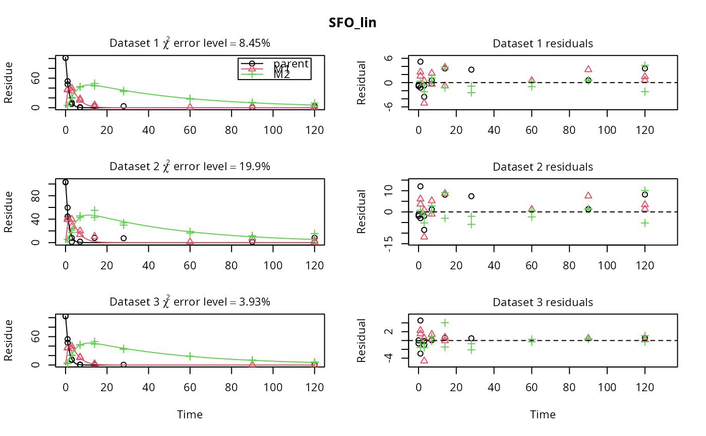

Fit one or more kinetic models with one or more state variables to one or more datasets
Source:R/mmkin.R
mmkin.RdThis function calls mkinfit on all combinations of models and
datasets specified in its first two arguments.
mmkin(
models = c("SFO", "FOMC", "DFOP"),
datasets,
cores = if (Sys.info()["sysname"] == "Windows") 1 else parallel::detectCores(),
cluster = NULL,
...
)
# S3 method for mmkin
print(x, ...)Arguments
- models
Either a character vector of shorthand names like
c("SFO", "FOMC", "DFOP", "HS", "SFORB"), or an optionally named list ofmkinmodobjects.- datasets
An optionally named list of datasets suitable as observed data for
mkinfit.- cores
The number of cores to be used for multicore processing. This is only used when the
clusterargument isNULL. On Windows machines, cores > 1 is not supported, you need to use theclusterargument to use multiple logical processors. Per default, all cores detected byparallel::detectCores()are used, except on Windows where the default is 1.- cluster
A cluster as returned by
makeClusterto be used for parallel execution.- ...
Not used.
- x
An mmkin object.
Value
A two-dimensional array of mkinfit
objects and/or try-errors that can be indexed using the model names for the first index (row index) and the dataset names for the second index (column index).
See also
[.mmkin for subsetting, plot.mmkin for
plotting.
Examples
# \dontrun{
m_synth_SFO_lin <- mkinmod(parent = mkinsub("SFO", "M1"),
M1 = mkinsub("SFO", "M2"),
M2 = mkinsub("SFO"), use_of_ff = "max")
#> Temporary DLL for differentials generated and loaded
m_synth_FOMC_lin <- mkinmod(parent = mkinsub("FOMC", "M1"),
M1 = mkinsub("SFO", "M2"),
M2 = mkinsub("SFO"), use_of_ff = "max")
#> Temporary DLL for differentials generated and loaded
models <- list(SFO_lin = m_synth_SFO_lin, FOMC_lin = m_synth_FOMC_lin)
datasets <- lapply(synthetic_data_for_UBA_2014[1:3], function(x) x$data)
names(datasets) <- paste("Dataset", 1:3)
time_default <- system.time(fits.0 <- mmkin(models, datasets, quiet = TRUE))
time_1 <- system.time(fits.4 <- mmkin(models, datasets, cores = 1, quiet = TRUE))
time_default
#> user system elapsed
#> 1.596 0.611 0.715
time_1
#> user system elapsed
#> 2.060 0.016 2.076
endpoints(fits.0[["SFO_lin", 2]])
#> $ff
#> parent_M1 parent_sink M1_M2 M1_sink
#> 0.7340481 0.2659519 0.7505683 0.2494317
#>
#> $distimes
#> DT50 DT90
#> parent 0.877769 2.915885
#> M1 2.325744 7.725956
#> M2 33.720100 112.015749
#>
# plot.mkinfit handles rows or columns of mmkin result objects
plot(fits.0[1, ])

plot(fits.0[1, ], obs_var = c("M1", "M2"))
 plot(fits.0[, 1])
plot(fits.0[, 1])
 # Use double brackets to extract a single mkinfit object, which will be plotted
# by plot.mkinfit and can be plotted using plot_sep
plot(fits.0[[1, 1]], sep_obs = TRUE, show_residuals = TRUE, show_errmin = TRUE)
# Use double brackets to extract a single mkinfit object, which will be plotted
# by plot.mkinfit and can be plotted using plot_sep
plot(fits.0[[1, 1]], sep_obs = TRUE, show_residuals = TRUE, show_errmin = TRUE)
 plot_sep(fits.0[[1, 1]])
# Plotting with mmkin (single brackets, extracting an mmkin object) does not
# allow to plot the observed variables separately
plot(fits.0[1, 1])
plot_sep(fits.0[[1, 1]])
# Plotting with mmkin (single brackets, extracting an mmkin object) does not
# allow to plot the observed variables separately
plot(fits.0[1, 1])
 # On Windows, we can use multiple cores by making a cluster first
cl <- parallel::makePSOCKcluster(12)
f <- mmkin(c("SFO", "FOMC", "DFOP"),
list(A = FOCUS_2006_A, B = FOCUS_2006_B, C = FOCUS_2006_C, D = FOCUS_2006_D),
cluster = cl, quiet = TRUE)
print(f)
#> <mmkin> object
#> Status of individual fits:
#>
#> dataset
#> model A B C D
#> SFO OK OK OK OK
#> FOMC OK OK OK OK
#> DFOP OK OK OK OK
#>
#> OK: No warnings
# We get false convergence for the FOMC fit to FOCUS_2006_A because this
# dataset is really SFO, and the FOMC fit is overparameterised
parallel::stopCluster(cl)
# }
# On Windows, we can use multiple cores by making a cluster first
cl <- parallel::makePSOCKcluster(12)
f <- mmkin(c("SFO", "FOMC", "DFOP"),
list(A = FOCUS_2006_A, B = FOCUS_2006_B, C = FOCUS_2006_C, D = FOCUS_2006_D),
cluster = cl, quiet = TRUE)
print(f)
#> <mmkin> object
#> Status of individual fits:
#>
#> dataset
#> model A B C D
#> SFO OK OK OK OK
#> FOMC OK OK OK OK
#> DFOP OK OK OK OK
#>
#> OK: No warnings
# We get false convergence for the FOMC fit to FOCUS_2006_A because this
# dataset is really SFO, and the FOMC fit is overparameterised
parallel::stopCluster(cl)
# }